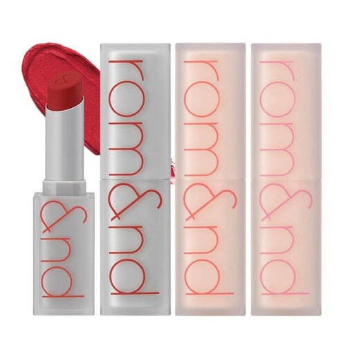

당신과 조화를 이루는 색은 회색 기와 푸른 기가 살짝 도는 고명도의 은은한 파스텔 컬러입니다.
‘겨울 브라이트 톤’의 컬러는 흰색이나 연하고 밝은 회색이 섞여 싱그러운 느낌을 줍니다.
겨울 브라이트를 위한 코디 추천
주로 코디할 때 쿨톤 컬러를 사용하는 것을 제외하고 제1순위로 신경써야 하는 것은
바로 대비감입니다. 대기감을 통해 생기있게 연출 할 수 있습니다.
겨울 브라이트를 위한 코디 추천

겨울 브라이트 타입은 밝은 파스텔톤의, 은은하게 비치는 부드러운 소재가 가장 잘 어울려요.
광택이 심하지 않은 실크, 쉬폰재질을 활용해보세요.
겨울 브라이트를 위한 립 추천

1. [부르조아] 루즈에디션 수플레 벨벳
한줄평 : 색은정말이뻐요 질감도 맘에들고요
그런데 다른분들이 지적한것처럼 지속력이 좋지않아서
수시확인해주어야합니다(공식 홈페이지 구매평)
28,000원
2. [HB코스메틱] 선명한 컬러표현 크리미 립스틱 106 피치코랄
한줄평 : 깔끔하게 발림성이 좋고 이뻐요~
립스틱 이지만 광택감도 있고 건조하지 않아요. (공식 홈페이지 구매평)
10,100원
3. [롬앤] 롬앤 제로 매트 립스틱 리뉴얼
한줄평 : 색상은 너무 예쁩니다. 딱 원하던 색상이에요.
가볍게 발려요 립밤 같이 얇게 빌리는데 매끄럽고 컬러도 넘 이뻐요 무향이구요 (네이버 블로그)
37,000원